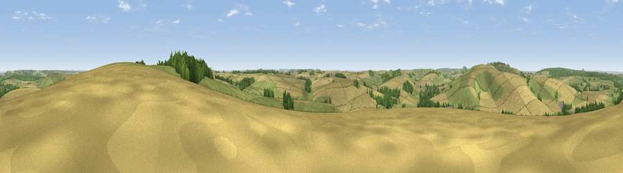

Viewpoint near Brixton Deverill
#15835 in England · top 24% of its area beats it · near Brixton DeverillWhere it is
The exact computed spot (ST 86775 37925). Click the marker for map links.
The view, rendered

A 360° render of this exact spot computed from the terrain model, tree cover and land cover — summer colours, afternoon light, calibrated against photographs of famous viewpoints. Real trees, hedges and buildings will differ in detail.
The panorama
Grey silhouette: terrain skyline in each direction (720 bearings, Earth curvature and refraction included). Dashed green: skyline with trees (+15 m) and buildings (+8 m) as obstacles. Blue strip: how far the ground is visible on each bearing.
Where the view opens
Wedge length = distance to the farthest visible ground on that bearing (vegetation-aware). Rings at 10, 25 and 50 km.
What fills the view
51% cropland · 38% grassland · 10% woodland ·
Angular shares of the visible panorama (visual magnitude), not map area. Landscape diversity 0.42 (0–1 Shannon).
Key numbers
More beautiful places nearby
The staircase of upgrades: each row has a higher view potential than everything closer. Driving times are estimates from straight-line distance, calibrated against real road routing — check an actual route before setting out.
| Place | Direction | Drive | Score |
|---|---|---|---|
| Viewpoint near Monkton Deverill | W · 2 km | ~6 min | 70.9 |
| Cley Hill | NNW · 8 km | ~15 min | 76.8 |
| Viewpoint near Berwick St John | SSE · 18 km | ~31 min | 78.2 |
| Beacon Batch | WNW · 43 km | ~63 min | 79.4 |
| Bleadon Hill [Loxton Hill] | WNW · 54 km | ~75 min | 79.6 |
| Eggardon Hill | SW · 54 km | ~76 min | 80.3 |
| Viewpoint near Askerswell | SW · 54 km | ~76 min | 81.7 |
| Viewpoint near Kimmeridge | S · 56 km | ~78 min | 82.9 |
51.14044, -2.19042 · source: screening · position refined by local search. Computed location — check access rights before visiting.